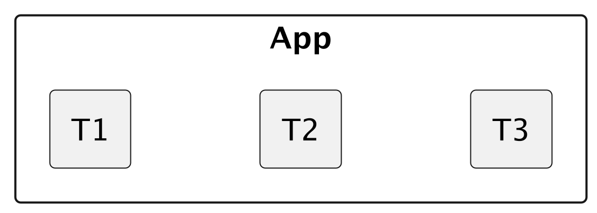
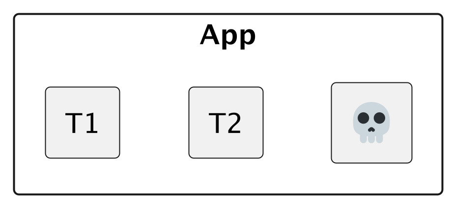
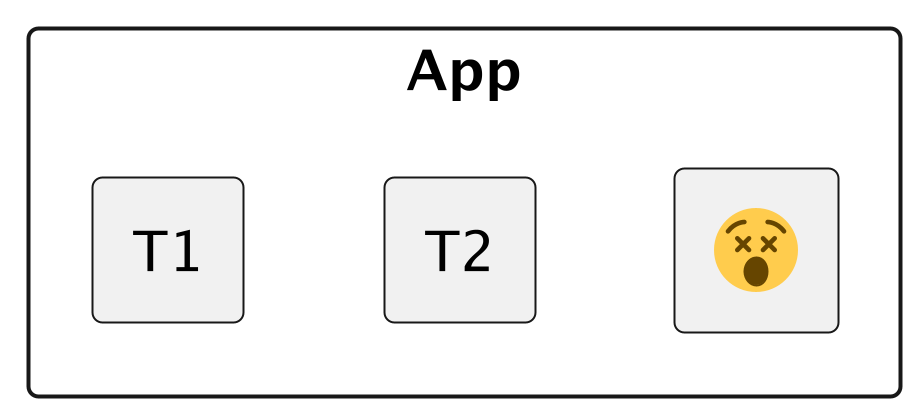
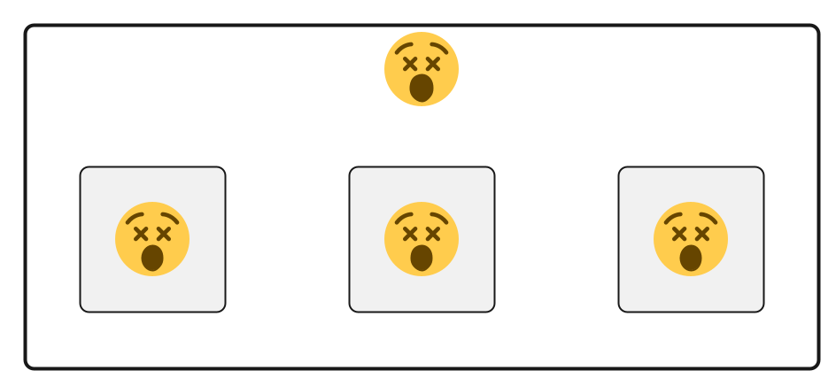
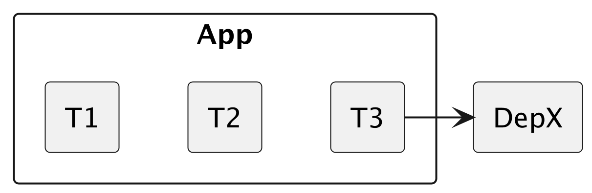
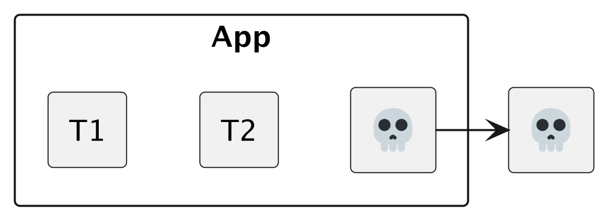
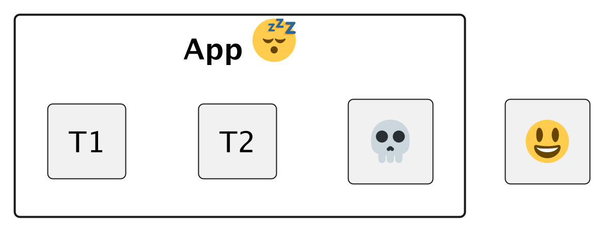
Idea influenced by Erlang and it's OTP library (not first ones to mention it in literature though)
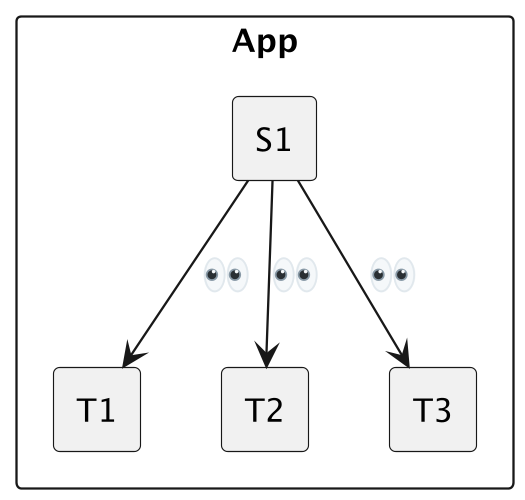
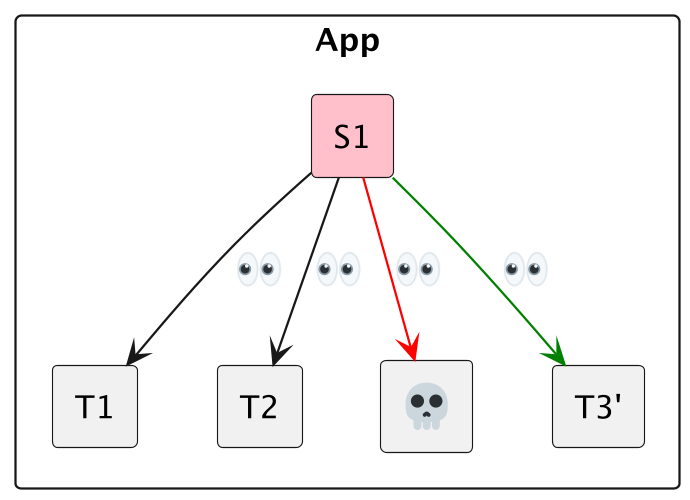
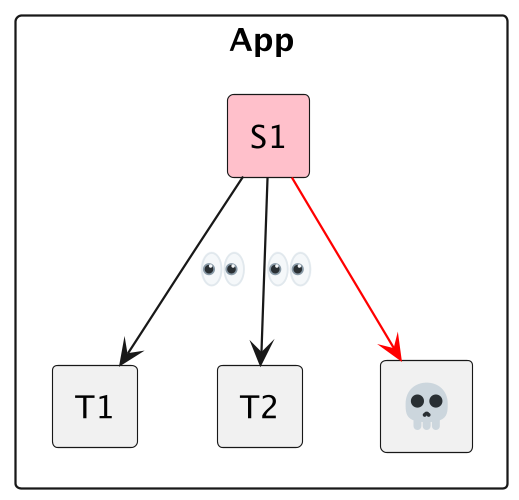
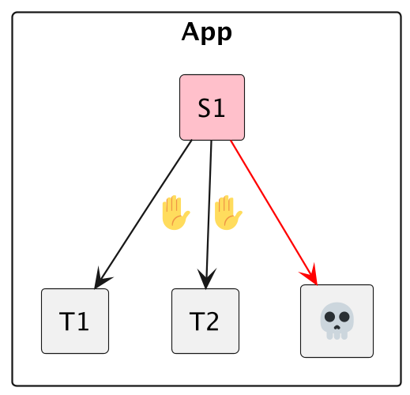
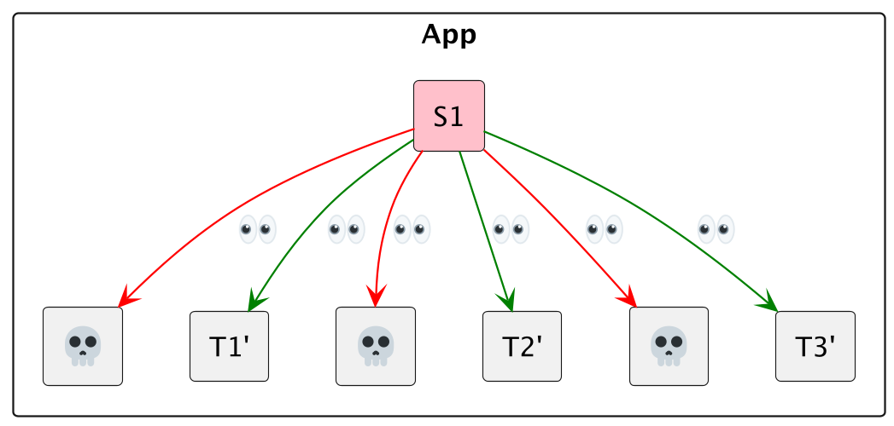
OneForAll restart strategies? NO. We use the Context API.context.Context typeasync fn my_task(
ctx: Context,
recv_chan: Receiver<Request>,
) -> Result<(), anyhow::Error> {
let db = database::New()
loop {
tokio::select! {
_ = ctx.done() => {
// ^^^^^^
db.close().map_err(anyhow::Error::new)
// De-Allocate or close resources after termination is signaled.
},
_ = recv_chan.recv() => {
// ... Business logic here.
}
}
}
}
If a context.done() signal doesn't get respected after some grace period, execute task
kill.
Should we keep restarting if failures occur? NO. Have a tolerance window (e.g. 1 error every 5 seconds), if surpassed, let it crash!
Let the API supervise supervisors
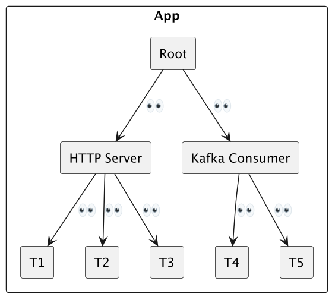
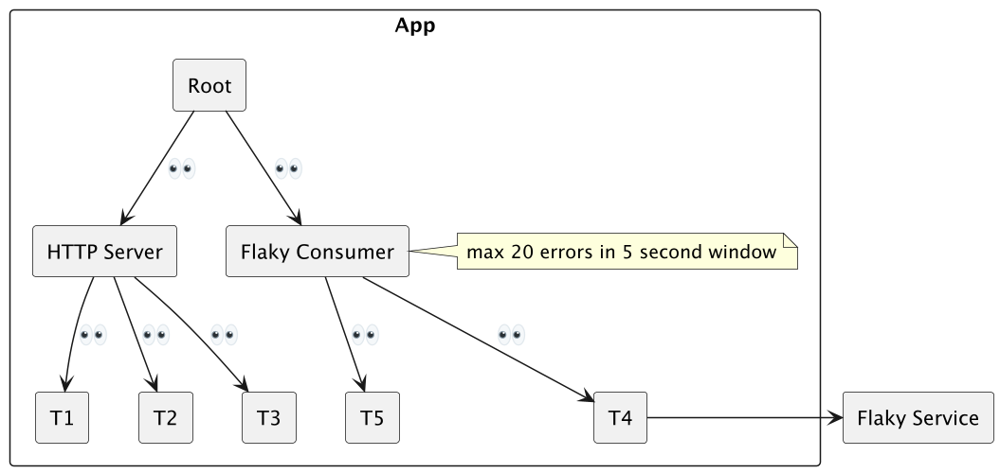
mpscContext, run tokio futures